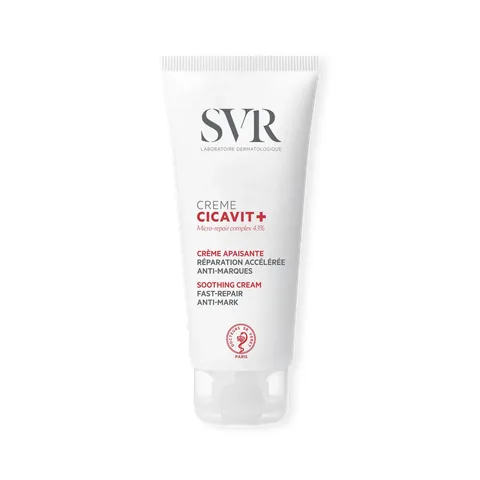
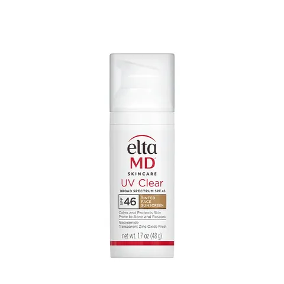
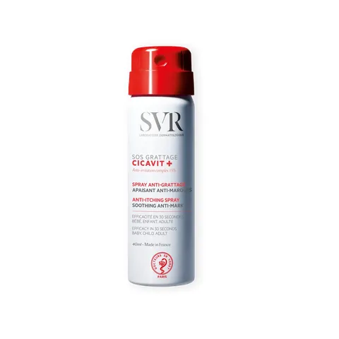

Por qué importa
Adiós a la depilación
de siempre.
La depilación láser de diodo actúa por fototermólisis selectiva: el haz de luz es absorbido por la melanina del vello, calienta el folículo y lo inactiva para que deje de producir pelo. Es la tecnología más indicada para vello oscuro y grueso, y por su longitud de onda de 810 nm funciona con seguridad en pieles claras, morenas e incluso bronceadas.
Como el vello crece en ciclos, no todos los folículos están activos al mismo tiempo: por eso el tratamiento se realiza en paquetes de varias sesiones —habitualmente 7 o 10— para lograr una reducción progresiva y uniforme. En MET Clinic combinamos potencia controlada con un cabezal que enfría la piel, para un protocolo cómodo, seguro y planificado zona por zona.
Tratamientos
Lo que ofrecemos.
Asirox — por zonas
Equipo de láser de diodo de alta potencia (810 nm) que trabaja con seguridad en todos los tipos de piel. Su cabezal de zafiro enfría la zona hasta −8 °C mientras aplica el calor de forma progresiva, destruyendo el folículo de manera cómoda. Tratamos prácticamente cualquier zona del cuerpo y el rostro.
Paquetes 7 y 10 sesionesPaquetes por zonas
Diseñamos combinaciones de zonas para que avances más rápido y con mejor precio. Cada combo se contrata en paquete de 7 o 10 sesiones, según el tipo de vello y la respuesta de tu piel. Pregunta por las zonas de regalo incluidas en los paquetes premium.
Zonas de regalo incluidasCuidado en casa
Para tu cuidado en casa.
Dermocosmética de la boutique de la clínica. En tu valoración te decimos cuál va contigo.

SVR Cicavit+ Crema 100 ml Ver en la tienda → SVR Sun Secure Blur Protector Solar en Mousse FPS50+ 50 ml Ver en la tienda →
ELTA UV Clear Broad Spectrum SPF46 Tinted 48 g Ver en la tienda →
SVR Cicavit+ SOS Grattage Spray 40 ml Ver en la tienda →Preguntas frecuentes
Lo que más nos preguntan.
¿Funciona en piel morena?
Sí. El láser de diodo Asirox de 810 nm funciona con seguridad en pieles claras, morenas e incluso bronceadas.
¿Cuántas sesiones necesito?
Habitualmente 7 o 10. El vello crece en ciclos y no todos los folículos están activos al mismo tiempo, así que se necesitan varias sesiones para una reducción uniforme.
¿Duele?
El cabezal de zafiro enfría la piel hasta −8 °C mientras aplica el calor de forma progresiva, para un protocolo cómodo.
¿Qué zonas se pueden tratar?
Prácticamente cualquier zona del cuerpo y del rostro. También hay combos de varias zonas en paquete.
¿Cómo agendo?
Por Doctoralia o por WhatsApp al 55 4009 9923. La clínica está en Guty Cárdenas 65, Col. Guadalupe Inn, Álvaro Obregón, CDMX.
Tu piel lisa
empieza con una valoración.
Agenda con la Dra. Melina Trujillo, definamos tus zonas y armemos el paquete ideal para tu tipo de piel y de vello.
Los resultados varían en cada persona. Todo tratamiento requiere una valoración médica previa, en la que la doctora explica beneficios, riesgos y contraindicaciones. Dra. Melina Trujillo Quiroz · Cédulas profesionales 9177465 · 5574513.